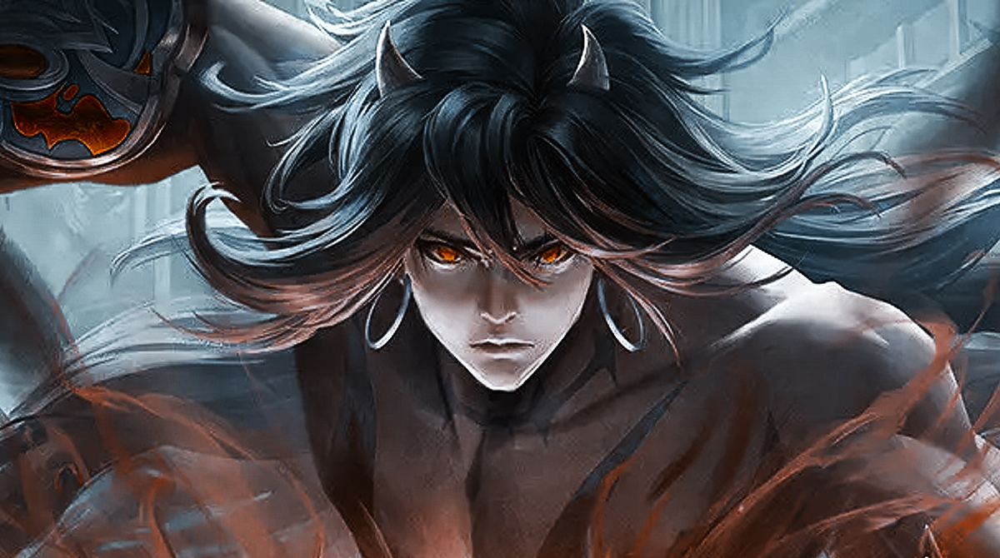

- 
-
.jpg)
-
.jpg)
第一章
This is what we are good at
“你是妖怪……”
“你是怪物……”
“你是孽障！畜生……”
“哈哈哈，你是废物！………”
“呵呵，你长的真像头牛，太丑了！………”
“将来世界的祸害留不得！必须杀了他！………”
“杀了他，杀了他，杀了他！……”
“我不是怪物，我不是，我不是！”
一个头上长着两只弯弯白角的少年躺在一片草地上，一身破旧衣服烂的不成模样，满身的泥土让他的衣服分不清是白色还是灰色。
此刻他俊俏稚嫩的脸颊上露着狰狞的表情。
他看似在说梦话，双拳已经把坚硬的土地挖出一个坑来。
少年名叫林如苏，今年11岁。
林如苏醒来，看看周围，周围是坍塌的几间房屋和长着杂草的田地，暗黑色的天空把这里衬得极为阴森，仿佛这里就是人间通向地狱的大门。
“这是什么地方？我怎么在这里？” 林如苏见到如此阴森的地方，心中升起怯意，从地上艰难地爬起。
林如苏虽然不知道他自己怎么会出现在这里，但他心中有个意念告诉他:要离开这里。
他从杂草中找到一个可以作为拐杖的树枝，没敢在这里多逗留半分。
突然，草丛里飞出一道红光，等林如苏反应过来，红光已经离自己身体只有一寸距离，他双眸中露出极为的恐惧。
“噗——”的一声，一道急速身影闪过，林如苏飞出几米之外，落在草地之上，吐了一口鲜血。
“呵呵，你这小家伙还想逃跑？”
一道酥人的声音突然响起。
林如苏捂住自己的胸口，恐惧的看向前方，他看见前方草丛上站着一个极为年轻妖艳的红衣女子。
她衣着坦胸露乳，一袭红衣长袍将那妖娆的曲线勾勒而出，亮黑色的文胸兜着一双雪白的山峰，尤其是那外露的修长的美腿，简直堪称完美。
她不仅姿态诱人，面容妩媚至极，瓜子脸，柳叶眉，大眼睛，尤其是那朱红色的小唇更是诱人。
简直就是仙女般的脸蛋。
虽然她生的如仙女般的身材和脸蛋，但额中一道醒目的魔纹却令人不敢直视，一身气息释放十足的戾气，是人一看就知道她是魔道中人，还是那种可能在魔道大有来头的人物。
此刻红衣女子正双手抱胸的注视着林如苏。
看到面前这位红衣女子，林如苏终于想起她是谁: 魔界使者“红蛛”！
“呵呵，怎么，见了师祖还不行礼？”
那魔界使者“红蛛”双眼释放着骇人的魔气，冷漠地看着附身在地上的林如苏，没有一丝师徒感情，倒是投来不屑的目光。
此前林如苏是这妖女刚收的徒弟，因为受不了这妖女折磨故逃到了这里，没想到她又追了过来。
但虽说林如苏是这妖女的徒弟，但却是…这妖女绑架来的，妖女常年以吃人练魔功，林如苏也知道说不定拿他做徒弟就是为了给她吃。
毕竟在他逃出来之前他可是亲眼看过这妖女吃人不吐骨头，甚至都不眨眼。 林如苏为了活下来才在她练功期间偷偷逃了出来。
“你到底是谁，为什么要缠着我……”
林如苏虽然害怕面前这个魔界使者红蛛，但他还是鼓起勇气冲着她喊道。
“呵呵，怎么，之前在魔丝领地不是告诉你了？不会这么快就忘了吧！是不是又想去泡逐魔池啊？嗯？！”
魔界使者红蛛突然扬起右手，凝聚一道暗红色的魔气。
“师祖，师祖，我怎么会忘记，苏儿可是时时刻刻记着呢。”
林如苏突然一改恐惧的表情向她献媚道。
没办法，与虎谋皮也就只能这样做，对于可怕的魔丝领地，对于可怕的逐魔池，林如苏想想都害怕，此次从那阴森可怕的魔丝领地逃出来正是因为那逐魔池的可怕，跳进逐魔池，连魔界妖魔都生不如死，更何况他还是一个地地道道的凡夫俗子。
“告诉师祖，你还想随我回去吗！”
“想想，苏儿日夜都想。”
对于面前这个魔女的威胁，他必须妥协。 对于林如苏来说，十一年的生活，受了别人十一年的嘲笑和冷落，他早就受够了这种生活，如今这个脑子有问题的魔女一直认为自己是她那个什么什么魔君大人的徒弟，那到不如顺水推舟跟她回去，借那家伙的身份学的一身本领，然后回去让那些曾经不将我放在眼里的人生不如死！
让他们知道十年间我受到的滋味！
最后再趁这妖女不注意杀掉她，也许她身上还有什么惊世骇俗的宝物，我毕竟在那魔丝领地也呆了一段时间，那段时间没干别的，就专门研究过那魔丝领地，那魔丝领地非常大，我都不知道有多大面积，她在魔丝领地的地位就像是皇宫里的皇上一般，整个魔丝领地都归她管辖。
我可是亲眼看过几个她饲养的奴吏因为惹她不高兴就被她生生吞噬而死，如此强大的手段再加上有如此大面积的魔丝领地作为她的财产，她身上肯定有无尽的宝藏……而且……林如苏摸摸胸口，心里升起一丝邪恶的念头，嘴角露出一丝笑意，他自然知道自己究竟在魔丝领地得到了什么。
“师祖，师祖，苏儿知道错了，我跟你回去，再也不会逃跑了，还请师祖饶了苏儿，传给苏儿一身本领！”
林如苏当然不会放过这次机会，他已经决定要随她回去，既然已经决定随她回去，那就把她哄的高高兴兴的，他可不想再受那逐魔池的腐蚀了。
“魔君大人看上的徒儿果然聪明，别人都说妖魔最可怕，我看你这小家伙心中想的比妖魔更可怕。”
红蛛似乎看出林如苏心中所想，听了林如苏的话倒是挺开心的。
“师祖不是坏人，是苏儿这辈子最好最好的人，等苏儿跟师祖学的一身本领，我就回到少林寺，把他们全都灭了！替师祖报仇雪恨，夺回那个什么金角。”
“呵呵，你小子倒真是坏坏的聪明的很，我都有点喜欢你了。”
“师祖，有我在你身旁一定让你十分高兴，没有烦恼的。如果将来我也有师祖这等来无影去无踪的本领，我会全力保护师祖的，只可惜现在苏儿只是肉体凡胎，帮不了师祖了，还拖师祖后腿。”
“呵呵，你这家伙，如果我听了你的，倒真是着了你的道了……”
红蛛伸手去扶林如苏的脑袋。
这时突然一道禅杖诡异的出现在魔女脑后，魔女来不及躲避就被禅杖打倒在地。
魔女附在地上吐了口鲜血，以一个充满仇恨的眸子盯着上方： “可恶，老不死的！”
“师祖！”
林如苏见到魔女受到禅杖攻击后立刻爬到魔女身边。
“师祖，你没事吧？”
林如苏关心地问道，其实他已经很清楚，刚才那个禅杖把她伤的不轻，已经接近重伤，但既然要跟她回去自然要把这魔女服侍好。
谁知突然那红蛛一把抓住林如苏的胸口，用一只手掐着林如苏的脖子，似乎要弄死林如苏。
“师师祖，你干什么，我是苏儿啊！”
在魔女手里的林如苏艰难地叫道，对于林如苏的哀求他自然是装的。
突如其来的动作让林如苏猝不及防，他自知不是这魔女的对手，但又摆脱不了她的控制，林如苏是真害怕她会为了逃命杀掉自己，不错，对于魔女来说他的命又算什么呢，估计她从来没将自己的生命当回事。
魔女自然不理会林如苏，她掐着林如苏的脖子愤怒的看着上方道:
“和尚，你听着，现在你们少林所看护的人可是在我手上。”
突然此刻天空一番空间扭曲，一道金色身影闪过，出现在魔女前方。
那是一个骨瘦如柴的老和尚，老和尚两眉斑白，但却显得和蔼，一袭金黄色袈裟斜披在身上，又显得万分沧桑。
“阿弥陀佛。”
老和尚单手附胸念了一声。
然后右手成掌向前方一伸，只见打伤魔女的那根禅杖就像被吸走了似的回到了老和尚手中。
“老东西，你听着，现在你最好把我放了，毕竟他在我手中，你要知道他可不能死！再说现在结界已经出现漏洞，恐怕现在除了我，已经有几个魔界中的高手进入凡界之中！”
老和尚没吭声，也没动，就这样站着。
“师祖，师祖……”
由于被魔女掐着脖子，林如苏的嘴上可没闲着，毕竟他身边的这个红衣女子是个杀人不眨眼的怪物，虽然人长的极为好看，可心眼可是个母夜叉，说话如放屁。
虽说之前她认为自己是她那个什么什么魔君大人的徒弟，可现在她自己都已经危在旦夕，她才不管那什么什么徒弟，对于这种魔女来说，生命才是第一，什么亲人，什么朋友弟子，全是屁话。
“别说话！” 红衣女子好久没理他，才张口小声叫道，突然她在背后伸出另外一只手，打出几道手法，最后食指指尖飞出一道如丝红光，
“嗖～～”
一声红光打入林如苏身体，林如苏突然觉得一种灵魂战栗的痛苦从胸口发出，如万般蚂蚁爬边全身，最终又如江河入海一般，纷纷汇入右手之中，顿时林如苏感觉右臂剧痛无比，之后又如同失去臂膀一般没有了知觉。
林如苏低头一看，自己的整个右臂变得漆黑，像中了剧毒一般，右臂上的皮肤都腐烂了，情况十分可怕恶心，就连手臂周围的青草都被手臂上的黑色血液染的枯死焦黑。
“师祖，你对我做了什么？”
见到自己的右臂变成这样，林如苏早就害怕之极。
“苏儿，现在你这条右臂里有我现在三分之二的功力，现在我命令你把右臂拧下来去偷偷把老和尚给杀了！”
“啊，拧下来！”
林如苏一听要把自己的胳膊拧下来，他怎能不害怕。 “
反正你的胳膊已经废了，倒不如拧下来重伤老东西，再说你的这条胳膊已经中了这世界上最厉害的毒，留着只能腐蚀你全身，有可能你连命都没有了。”
魔女松开掐在林如苏脖子上的手。
林如苏正沉浸在惊讶恐惧之中！手臂报废？！危机生命？！这魔女怎么这么恶毒，毕竟是师徒关系啊……
“你，你……！”
突然那魔女露出一丝痛苦和惊讶仇恨的目光看着旁边的林如苏。
“师祖，别怪我，你以我的生命作为你的护身符，而我又何尝不是？”
林如苏放开插在魔女胸上的刀柄，撇下一道恶毒的目光，然后转身恐惧的朝老和尚叫道:
“方丈大师，快来救我！……”
被林如苏暗算，那魔女别提有多憎恨，但又很无奈，谁让她自己相信面前这个乳臭未干但心机浓重，又油腔滑调的少年呢。
“可恶！”
魔女向林如苏投去憎恨的目光，正要化作一道黑光逃去，突然她的头顶的天空上飞出一串佛珠。